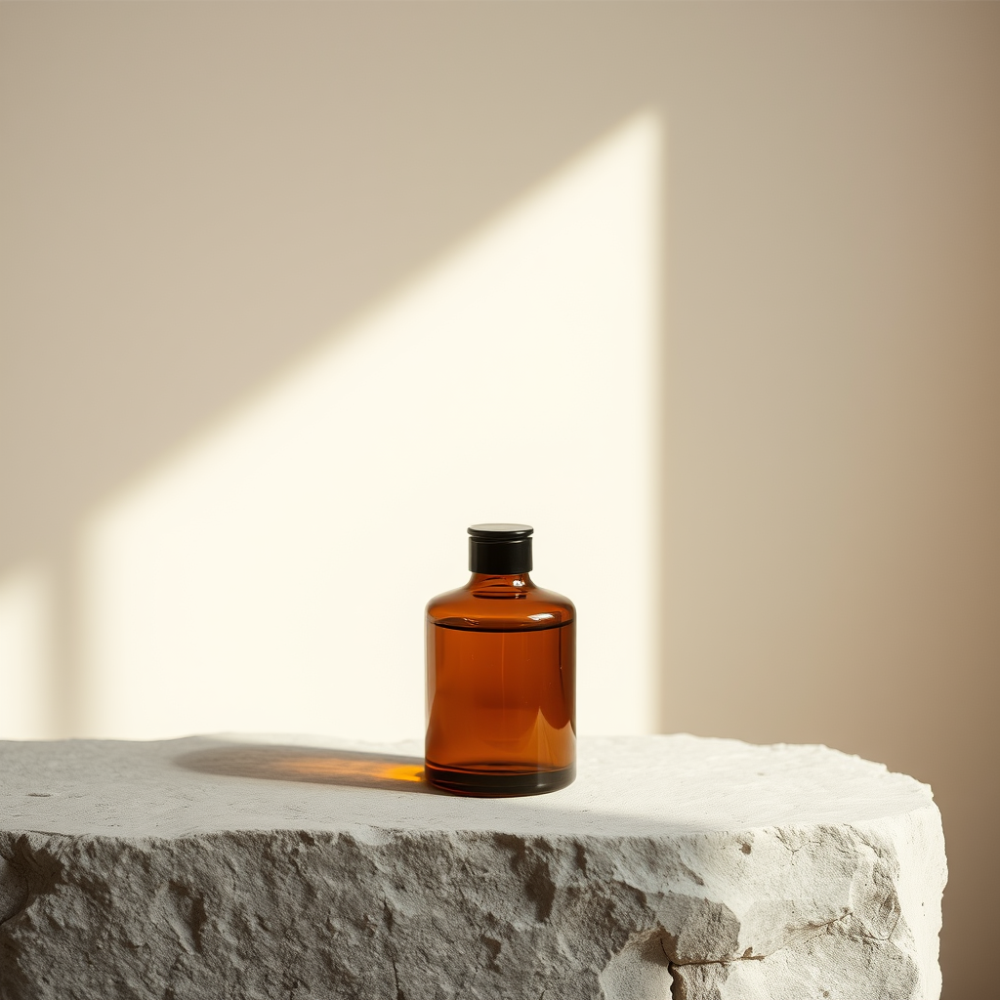
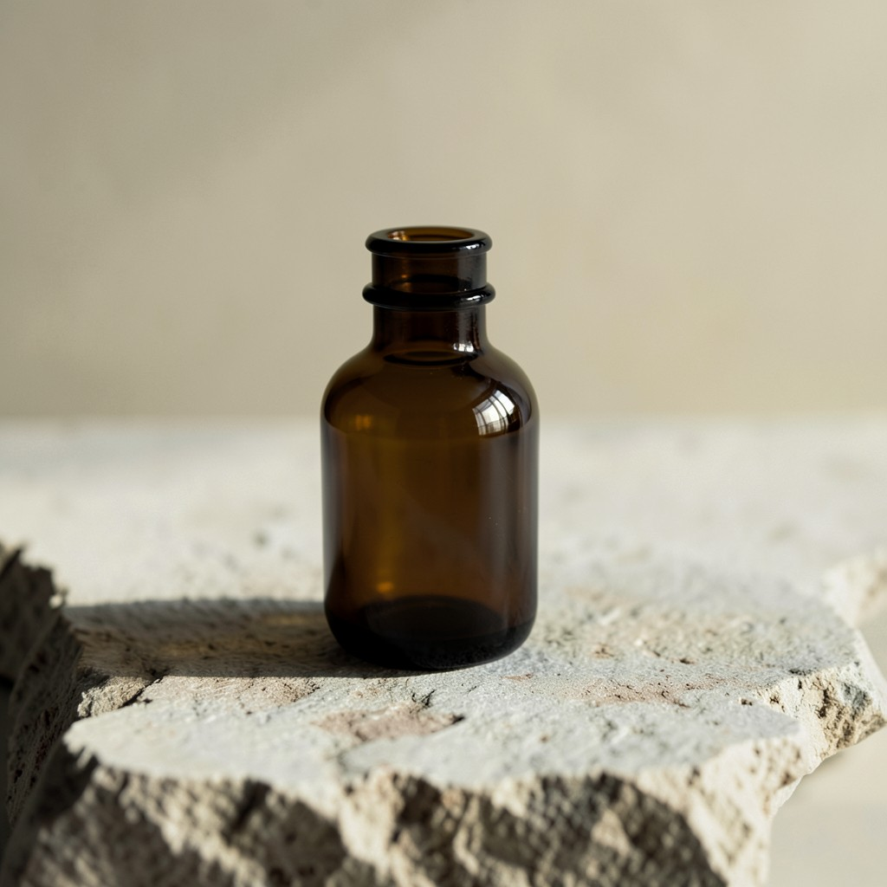
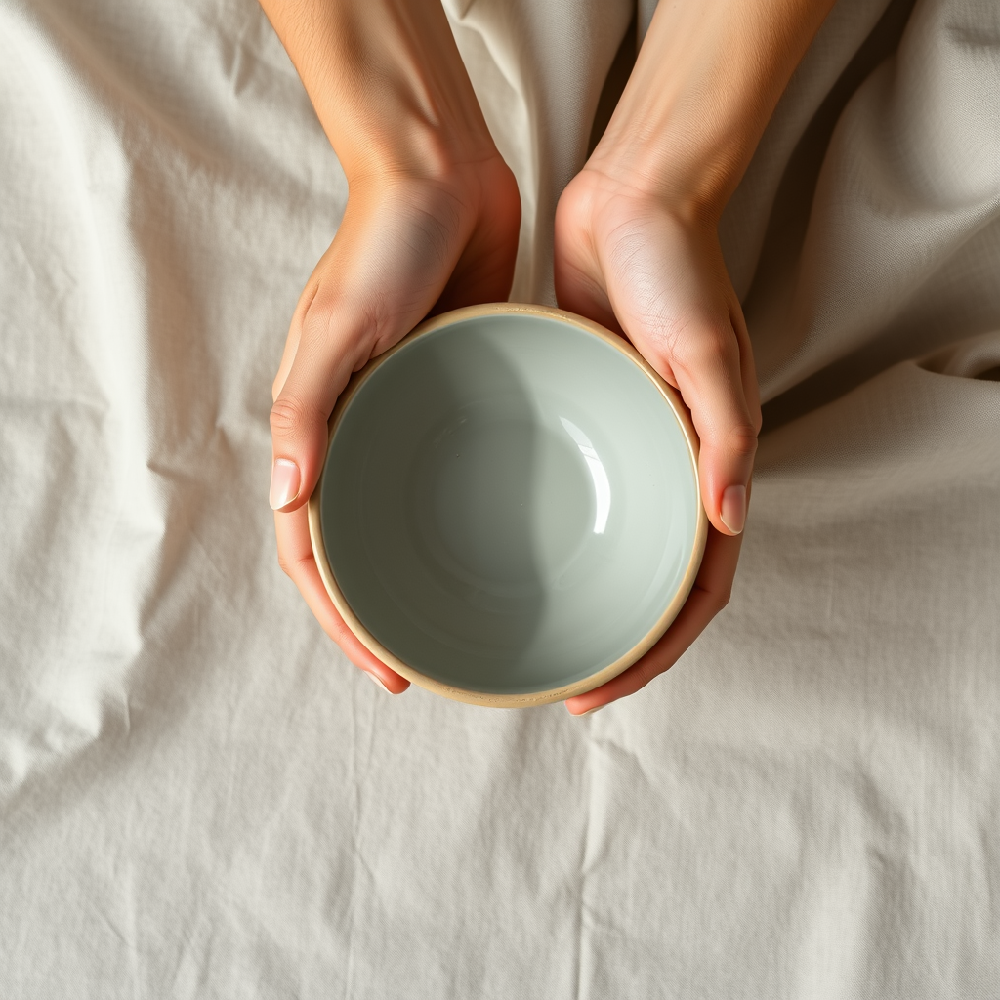
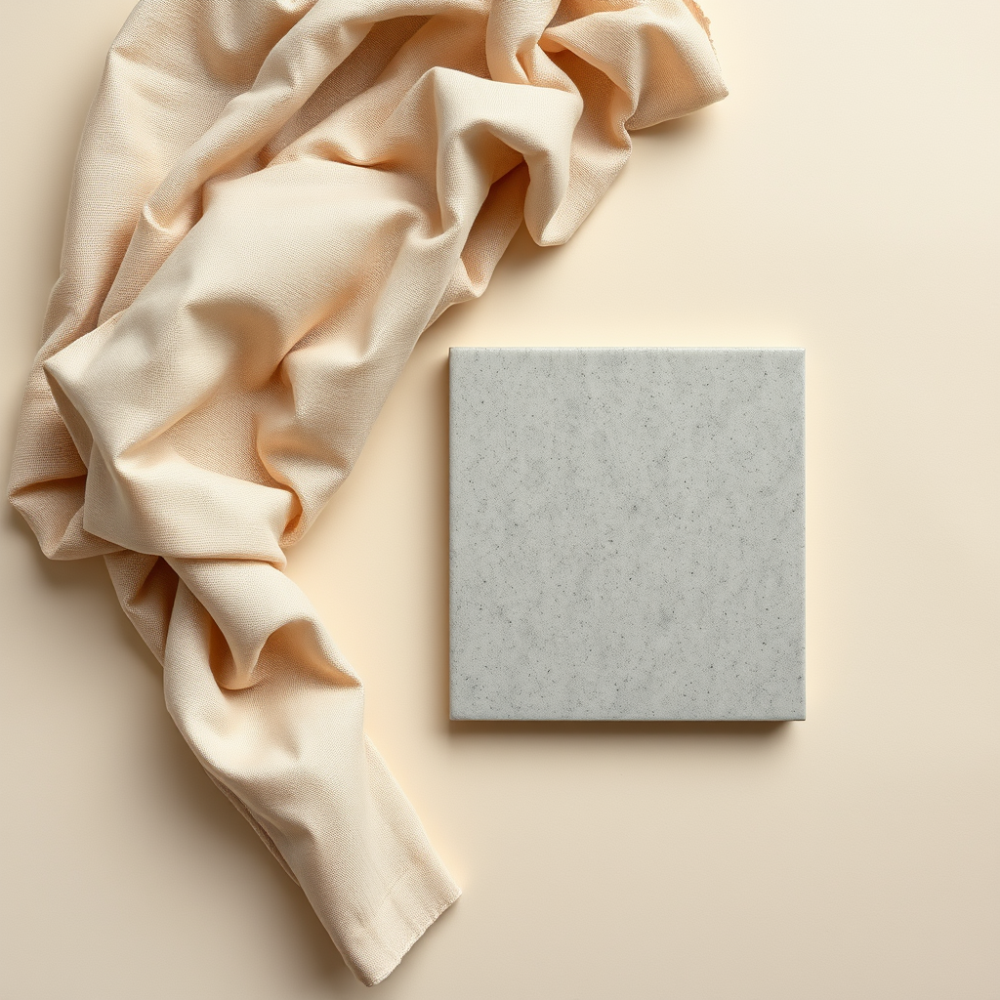
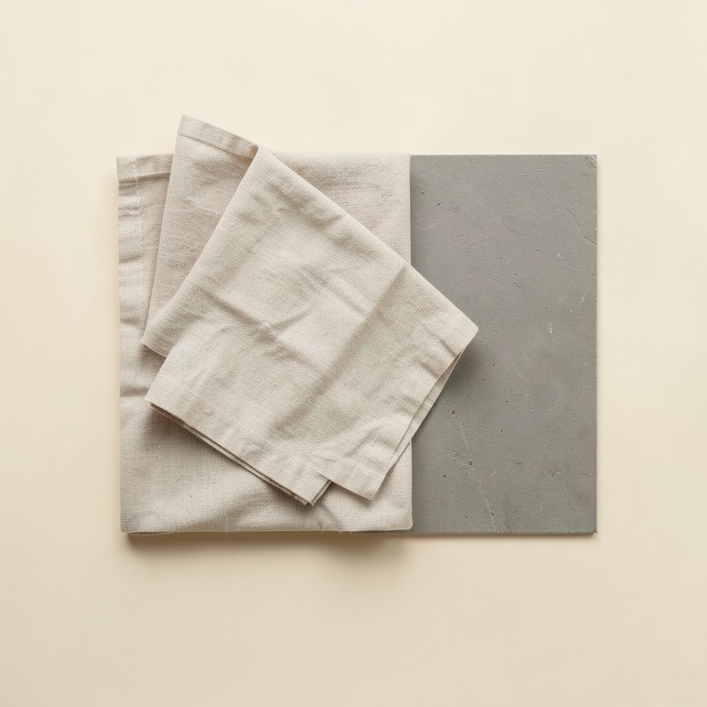
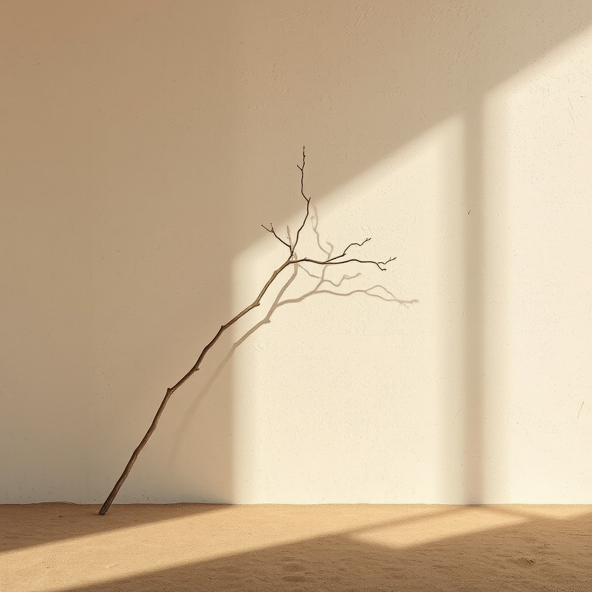
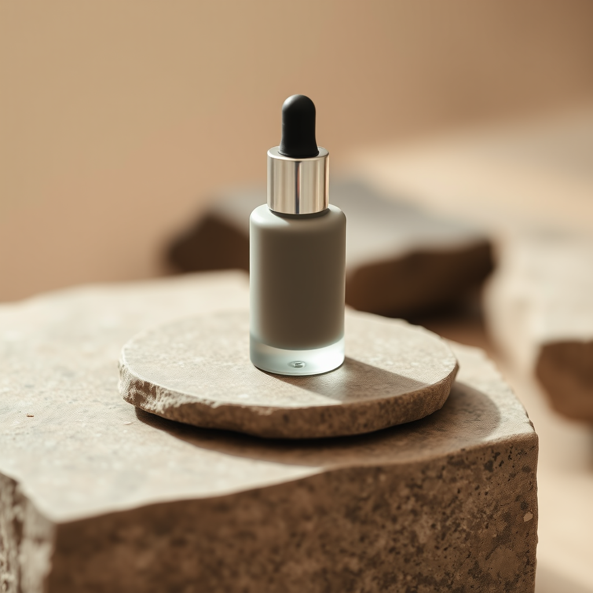
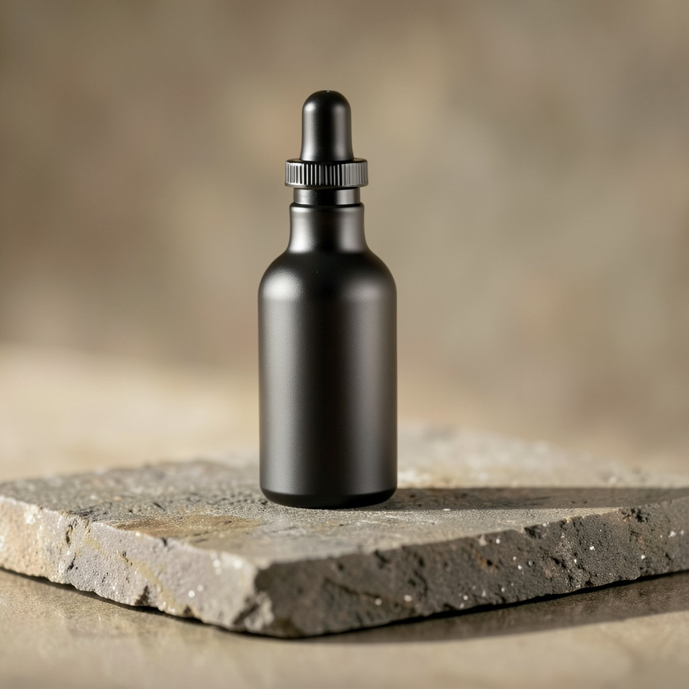

Judge by eye: prompt adherence (palette, surface, light), composition, and overall fit to the quiet-luxury-wellness brief.
| Prompt | FLUX.1-schnell (current) | FLUX.2-klein-4B (NVIDIA) |
|---|---|---|
| single amber glass apothecary vessel on raw limestone surface, diffuse morning light, warm cream and deep charcoal palette, extreme negative space, matte finish, minimal editorial product photography, quiet luxury wellness aesthetic |  9.4s |  4.6s |
| close-up of hands holding a smooth ceramic bowl, linen fabric background, soft natural side light, taupe and sage grey-green tones, generous empty space, tactile matte texture, restrained editorial photography |  0.0s | FAILED CONTENT_FILTERED by NVIDIA safety filter (finishReason=CONTENT_FILTERED) |
| flat lay of folded undyed linen and a matte stone tile on warm cream paper, overhead diffuse light, low-saturation neutral palette, no gloss, no props, spacious composition, premium minimalist still life |  0.0s |  2.5s |
| a single dried branch casting a soft shadow on a textured plaster wall, warm neutral light, sand and charcoal palette, vast negative space, calm and unhurried mood, fine-art minimal photography |  0.0s | FAILED CONTENT_FILTERED by NVIDIA safety filter (finishReason=CONTENT_FILTERED) |
| matte glass serum bottle on brushed stone, shallow depth of field, warm diffuse studio light, cream/taupe/charcoal palette, no text, no people, editorial luxury skincare aesthetic, generous margins |  0.0s |  2.5s |